The "Querying Vocabulary" function described here is primarily aimed at teachers of German as a foreign language (GFL). It allows you to search in the selected corpus for speech events which contain a high number of important vocabulary for a specific topic you may want to introduce in your GFL lessons in the context of authentic spoken interactions, such as food, school, work etc.
You can either upload your own vocabulary list or you can open one of the proposed thematic vocabulary lists by pressing the button 'Preselected thematic vocabulary'.
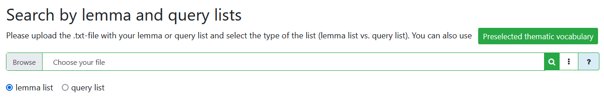If you want to use your own vocabulary list, upload it by clicking in the search field 'Chose your file'.
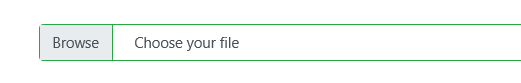Select the vocabulary file from your computer
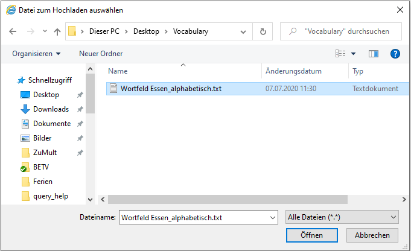and click on the search button (green button with a magnifying-glass icon).
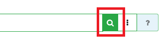Your vocabulary list should be a .txt-document with one search item per line. The search item can be either a simple lemma:
Abfalleimer
Abwasch
backen
Currywurst
Dessert
essen
...
or a search query pattern formulated in the CQP Query Language (cf. the query conventions in the Query Help):
[lemma="Abfalleimer"]
[lemma="Abwasch"]
[lemma="backen"]
[lemma="Currywurst"]
[lemma="essen"]
...
The benefit from the use of CQP Query Language ist that you can not only search for a lemma, but also specify the position of it, for example 'at the beginning of a transcript' or 'at the end of a contribution'. It also allows you to specify collocations (e.g. 'Kuchen backen') and set the precedence and token distance between single words. Here are some relevant examples:
Three thematic vocabulary lists have been prepared as part of the ZuMult-project for the demonstration of search functionalities. You can open them by pressing the green button:
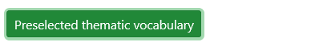The vocabulary lists are compiled in the query format and cover the topics 'Food', 'House and Apartment', 'School and Education'. They are based on the thematic vocabulary of the workbook "Sage und Schreibe. Übungswortschatz Grundstufe A1-B1", edited by Fandrych and Tallowitz (2019). You are free to use these preselected vocabulary lists for your own purposes.
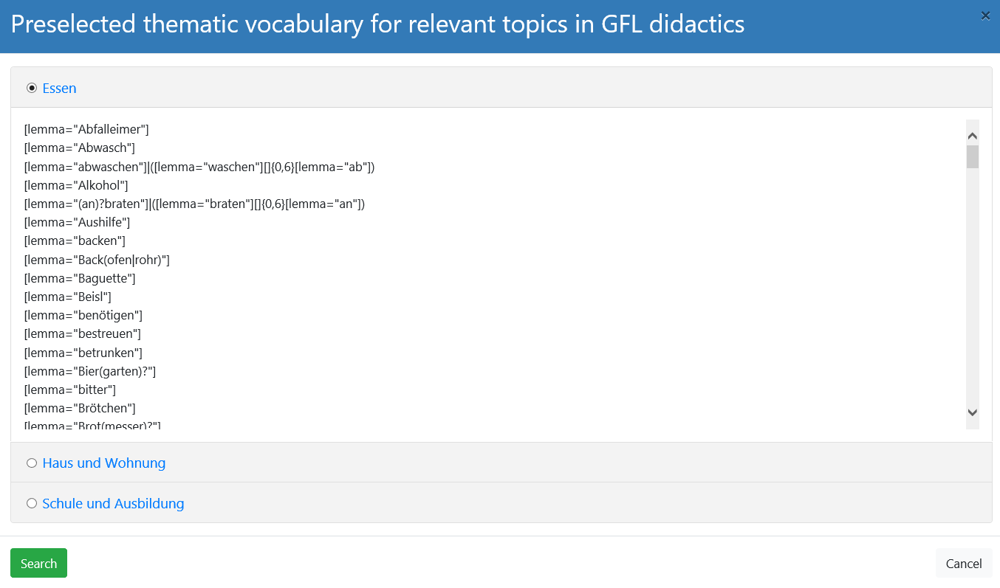Once you have uploaded or opened a thematic list, a ranking list will show you the transcripts with most hits: 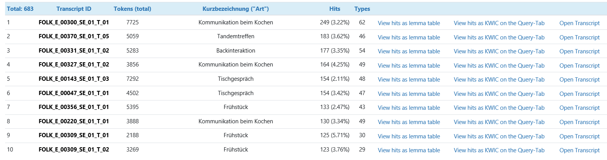
The result list of transcripts is sorted either according to absolute numbers or relative to the word token number of the respective transcript or relative to the number of types of hits. You can set this in the ordering options by using the button with three vertical dots next to the search button:
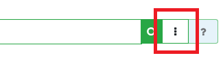The link 'View hits as lemma table' opens a new window with a table displaying the frequency distribution of hits in the selected transcript for each lemma from the vocabulary list.
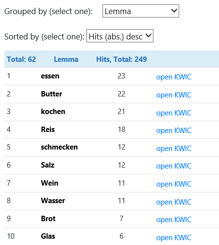You can open the respective KWIC for every transcript by clicking on 'View hits as KWIC on the Query Tab' and see the individual word results (kind and complexity) in their sequential context. Click the button 'group hits' and select 'lemma' to display the distribution of your vocabulary in the selected transcript.
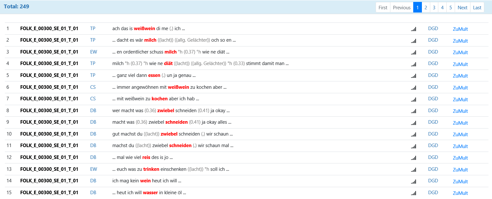If you click on 'Open Transcript', you will open the respective transcript in the full form including the complete and alphabetically sorted list of all word tokens that appear in the transcript. The thematic keywords will be marked with a red check mark in the transcript word list on the left (red check mark) and they will be highlighted throughout the transcript. You can also combine this marking with the vocabulary marking for the Goethe and Herder Wortschatz lists (green check mark).
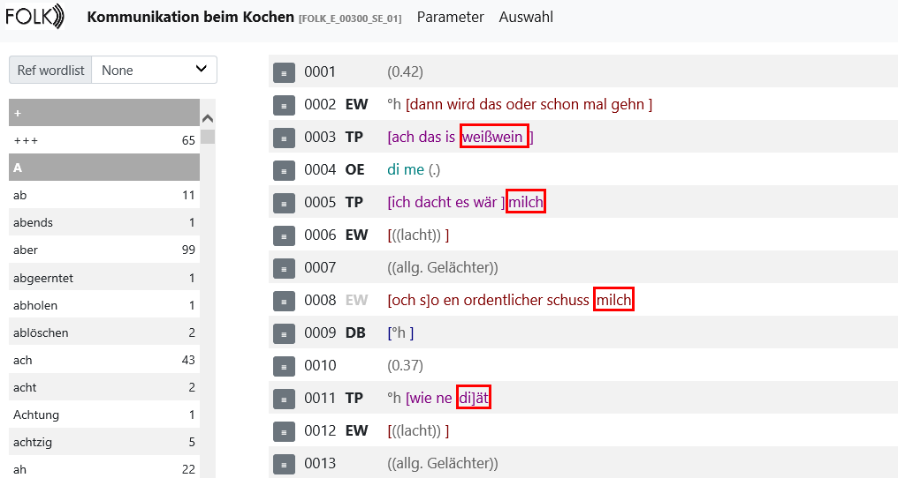